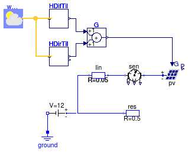
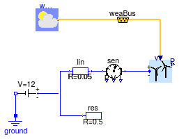

Package with example models
Information
This package contains examples for the use of models that can be found in
Buildings.Electrical.DC.Sources.
Extends from Modelica.Icons.ExamplesPackage (Icon for packages containing runnable examples).
Package Content
| Name |
Description |
 PVSimple PVSimple
|
Example for the PVSimple model with constant load |
| PVSimpleOriented
|
Example for the PVSimpleOriented model with constant load |
| VoltageSource
|
Example for the variable voltage source model |
| WindTurbine
|
Example for the WindTurbine model |
Example for the PVSimple model with constant load

Information
This model illustrates the use of the photovoltaic model.
The total solar irradiation is computed based
on a weather data file.
The PV is connected to a circuit that has a constant voltage
source and a resistance.
This voltage source may be a DC grid to which the
circuit is connected.
The power sensor shows how much electrical power is consumed or fed into the voltage source.
In actual systems, the voltage source may be an AC/DC converter.
Extends from Modelica.Icons.Example (Icon for runnable examples).
Modelica definition
model PVSimple
"Example for the PVSimple model with constant load"
extends Modelica.Icons.Example;
Buildings.Electrical.DC.Sources.PVSimple pv(A=10, V_nominal=12)
"PV module";
Modelica.Electrical.Analog.Basic.Ground ground;
Buildings.Electrical.DC.Loads.Resistor res(R=0.5, V_nominal=12)
"Resistance";
Buildings.Electrical.DC.Sources.ConstantVoltage sou(V=12)
"Voltage source";
Buildings.BoundaryConditions.SolarIrradiation.DiffusePerez HDifTil(
til=0.34906585039887,
lat=0.65798912800186,
azi=-0.78539816339745)
"Diffuse irradiation on tilted surface";
Buildings.BoundaryConditions.SolarIrradiation.DirectTiltedSurface HDirTil(
til=0.34906585039887,
lat=0.65798912800186,
azi=-0.78539816339745)
"Direct irradiation on tilted surface";
Buildings.BoundaryConditions.WeatherData.ReaderTMY3 weaDat(
computeWetBulbTemperature=false,
filNam="modelica://Buildings/Resources/weatherdata/USA_CA_San.Francisco.Intl.AP.724940_TMY3.mos");
Modelica.Blocks.Math.Add G
"Total irradiation on tilted surface";
Buildings.Electrical.DC.Lines.TwoPortResistance lin(R=0.05)
"Transmission line";
Buildings.Electrical.DC.Sensors.GeneralizedSensor sen
"Sensor";
equation
connect(weaDat.weaBus, HDifTil.weaBus);
connect(weaDat.weaBus, HDirTil.weaBus);
connect(HDifTil.H, G.u1);
connect(HDirTil.H, G.u2);
connect(G.y, pv.G);
connect(sou.terminal, res.terminal);
connect(lin.terminal_n, res.terminal);
connect(lin.terminal_p, sen.terminal_n);
connect(sen.terminal_p, pv.terminal);
connect(sou.n, ground.p);
end PVSimple;
Example for the PVSimpleOriented model with constant load

Information
This model illustrates the use of the photovoltaic model.
The total solar irradiation is computed internally by the PV
model through a connection to the weather bus.
The PV is connected to a circuit that has a constant voltage
source and a resistance.
This voltage source may be a DC grid to which the
circuit is connected.
The power sensor shows how much electrical power is consumed or fed into the voltage source.
In actual systems, the voltage source may be an AC/DC converter.
Extends from Modelica.Icons.Example (Icon for runnable examples).
Modelica definition
model PVSimpleOriented
"Example for the PVSimpleOriented model with constant load"
extends Modelica.Icons.Example;
Buildings.Electrical.DC.Sources.PVSimpleOriented
pv(A=10,
V_nominal=12,
til=0.34906585039887,
lat=0.65798912800186,
azi=-0.78539816339745)
"PV module";
Modelica.Electrical.Analog.Basic.Ground ground;
Buildings.Electrical.DC.Loads.Resistor res(R=0.5, V_nominal=12)
"Resistance";
Buildings.Electrical.DC.Sources.ConstantVoltage sou(V=12)
"Voltage source";
Buildings.BoundaryConditions.WeatherData.ReaderTMY3 weaDat(
computeWetBulbTemperature=false, filNam="modelica://Buildings/Resources/weatherdata/USA_CA_San.Francisco.Intl.AP.724940_TMY3.mos");
Buildings.Electrical.DC.Lines.TwoPortResistance lin(R=0.05)
"Transmission line";
Buildings.Electrical.DC.Sensors.GeneralizedSensor sen
"Sensor";
equation
connect(sou.terminal, res.terminal);
connect(lin.terminal_n, res.terminal);
connect(lin.terminal_p, sen.terminal_n);
connect(sen.terminal_p, pv.terminal);
connect(sou.n, ground.p);
connect(weaDat.weaBus, pv.weaBus);
end PVSimpleOriented;
Example for the variable voltage source model

Information
This model illustrates the use of the variable voltage source model.
Extends from Modelica.Icons.Example (Icon for runnable examples).
Modelica definition
Example for the WindTurbine model

Information
This model illustrates the use of the wind turbine model which is connected to a DC voltage source and a resistance.
This voltage source may be a DC grid to which the
circuit is connected.
Wind data for San Francisco, CA, are used.
The turbine cut-in wind speed is 3.5 m/s,
and hence it is off in the first day when the wind speed is low.
Extends from Modelica.Icons.Example (Icon for runnable examples).
Connectors
| Type | Name | Description |
|---|
| Bus | weaBus | |
Modelica definition
model WindTurbine
"Example for the WindTurbine model"
extends Modelica.Icons.Example;
Buildings.Electrical.DC.Sources.WindTurbine tur(
table=[3.5, 0;
5.5, 100;
12, 900;
14, 1000;
25, 1000], h=10,
V_nominal=12)
"Wind turbine";
Buildings.BoundaryConditions.WeatherData.ReaderTMY3 weaDat(
computeWetBulbTemperature=false, filNam="modelica://Buildings/Resources/weatherdata/USA_CA_San.Francisco.Intl.AP.724940_TMY3.mos");
Buildings.BoundaryConditions.WeatherData.Bus weaBus;
Modelica.Electrical.Analog.Basic.Ground ground;
Buildings.Electrical.DC.Loads.Resistor res(R=0.5, V_nominal=12)
"Resistance";
Buildings.Electrical.DC.Sources.ConstantVoltage sou(V=12)
"Voltage source";
Buildings.Electrical.DC.Lines.TwoPortResistance lin(R=0.05)
"Transmission line";
Buildings.Electrical.DC.Sensors.GeneralizedSensor sen
"Sensor";
equation
connect(weaDat.weaBus,weaBus);
connect(weaBus.winSpe,tur. vWin);
connect(sou.terminal, res.terminal);
connect(lin.terminal_n, res.terminal);
connect(lin.terminal_p, sen.terminal_n);
connect(sen.terminal_p, tur.terminal);
connect(sou.n, ground.p);
end WindTurbine;
Automatically generated Mon Jul 13 14:23:39 2015.
 Buildings.Electrical.DC.Sources.Examples.PVSimple
Buildings.Electrical.DC.Sources.Examples.PVSimple